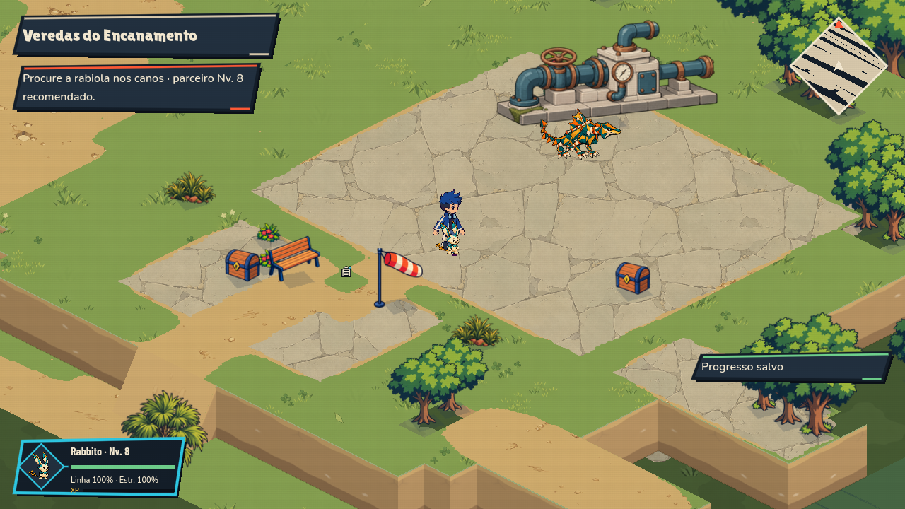
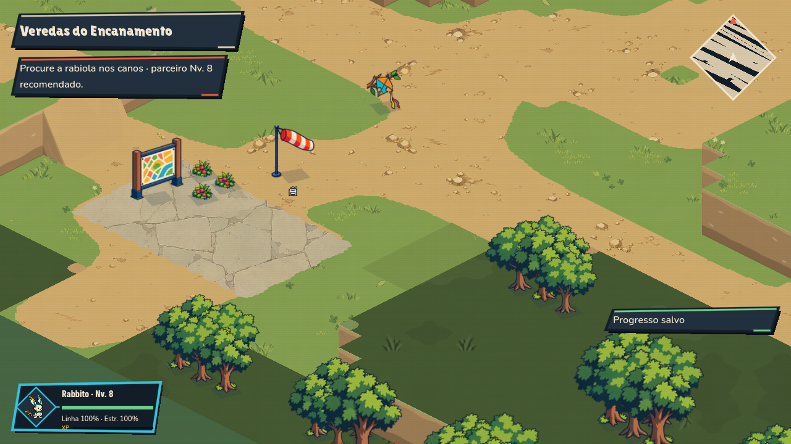
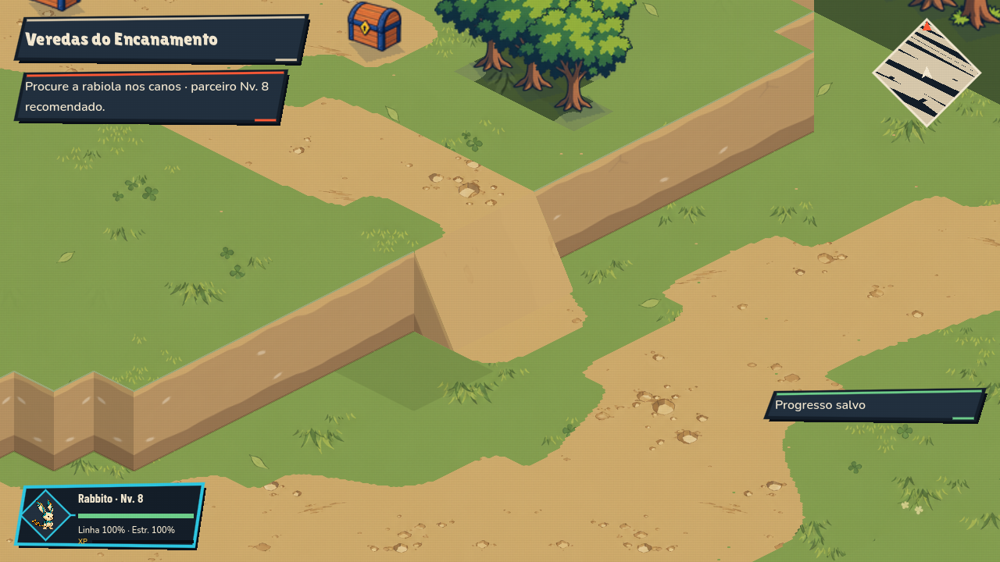
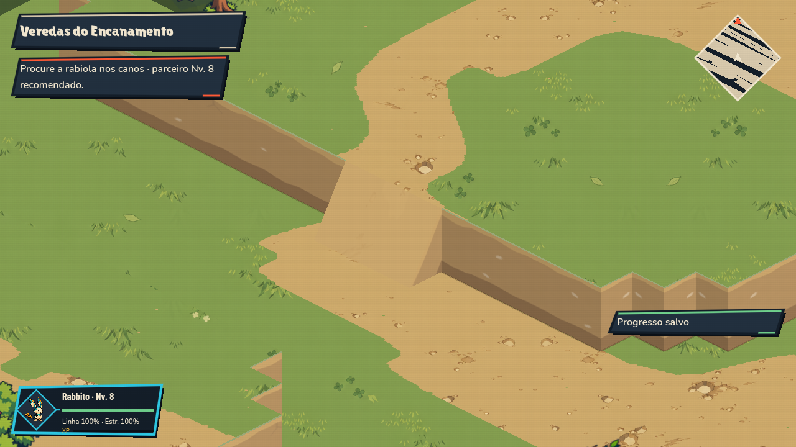
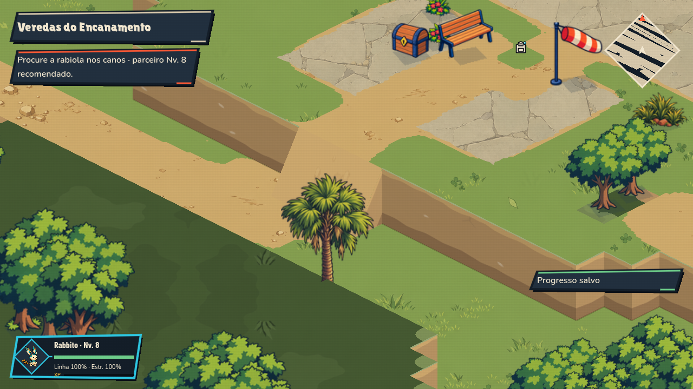
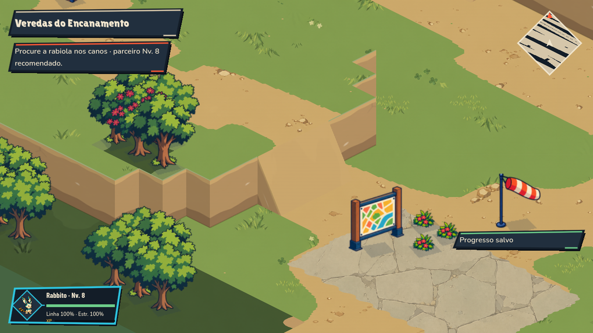

Veredas do Encanamento
Pátio de pedra, estação hidráulica, grama e caminhos contínuos. Capturas nativas do jogo em 1280×720. Percurso da campanha: 104 verificações sem falhas.
 Antes: piso de passeio e três módulos repetidos.
Antes: piso de passeio e três módulos repetidos.
Depois: piso próprio e estação hidráulica como ponto de referência.
Trilhas: detalhes espaçados e transições contínuas.
Rampa norte: lateral fechada e apoio no solo.
Rampa oeste ampliada.
Acesso ao pátio.
Rampa sul ampliada.Registro de produção, fontes e limites da validação.